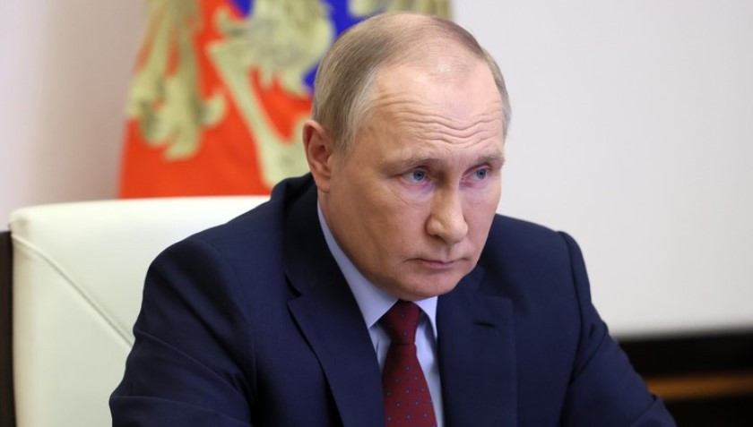

Trong một bài phát biểu hôm 6/6 - trước thời điểm diễn ra Diễn đàn Kinh tế Quốc tế St. Petersburg - ông Putin cho rằng thế giới đang phải trả giá cho sự kém cỏi của phương Tây, đặc biệt là trong việc quản lý sai nền kinh tế toàn cầu.
"Những sai lầm tồn tại nhiều năm trong chính sách kinh tế của các nước phương Tây và các lệnh trừng phạt bất hợp pháp đã gây ra làn sóng lạm phát toàn cầu, phá vỡ các chuỗi sản xuất và hậu cần, làm gia tăng nghèo đói và gây ra tình trạng thiếu lương thực", ông Putin nói.
Những thách thức đó cũng là cơ hội, theo Tổng thống Nga. Ông Putin dự đoán rằng thập kỷ hiện tại sẽ là thời điểm mà Nga "khẳng định chủ quyền kinh tế của mình" bằng cách xây dựng cơ sở hạ tầng, cơ sở sản xuất, đầu tư vào các lao động lành nghề và tạo ra một hệ thống tài chính độc lập. Nền kinh tế Nga vẫn sẽ mở cửa với thế giới, Tổng thống Nga cam kết.
Diễn đàn Kinh tế Quốc tế St. Petersburg sẽ diễn ra từ ngày 15/6 đến ngày 18/6. Theo những nhà tổ chức, hơn 2.700 lãnh đạo doanh nghiệp, trong đó có hơn 1.000 giám đốc điều hành, đã xác nhận tham gia diễn đàn, tính đến ngày 1/6.
Diễn đàn này nhằm chứng minh khả năng của Nga trong việc chịu đựng áp lực từ phương Tây và các nỗ lực cô lập Moscow về ngoại giao và kinh tế với phần còn lại của thế giới.
Mỹ và các đồng minh đã áp đặt hàng loạt biện pháp trừng phạt kinh tế chưa từng có với Nga sau khi Moscow mở chiến dịch quân sự ở Ukraine hôm 24/2.
| Tên | Tuổi | Điểm thi | ||
|---|---|---|---|---|
| Đỗ Nam Trung | 20 | 7.5 | ||
| Nguyễn Viêt Anh | 22 | 10 |